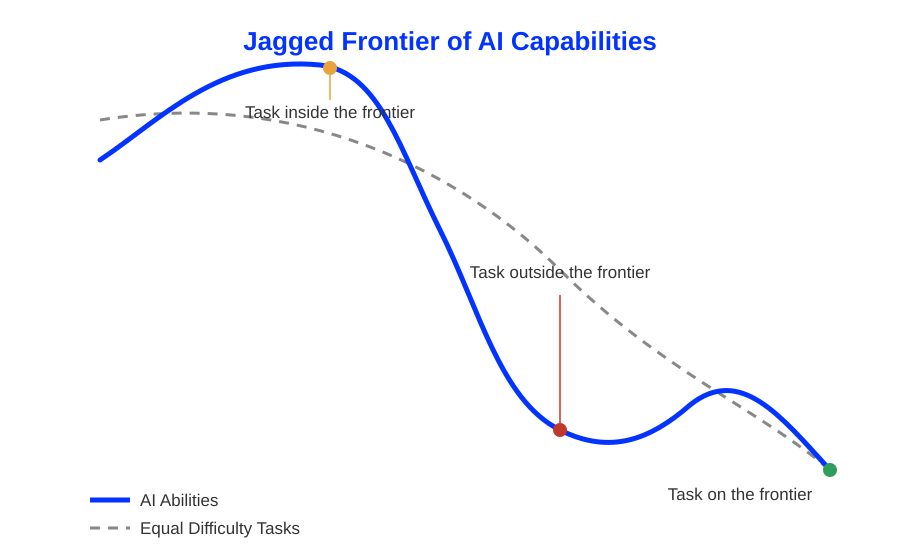

How can human-AI collaboration exceed the sum of its parts?
Neu-Ulm University of Applied Sciences
November 13, 2026
Generation is cheap.
Verification is not.
How can we structure our work with AI to ensure that the sum is greater than the parts, rather than less?
Think about the last time you used an AI tool for university or work.
Did it save you time overall, once you count the time spent reviewing, correcting, and rewriting what it produced?
Discuss with a neighbor.
03:00
AI compresses the time it takes to get from blank page to first draft.
AI narrows the gap between novices and experts, at least initially.
Disproportionate performance gains accrue to novices and bottom-quartile performers (Brynjolfsson et al., 2023; Cruces et al., 2025).
More ideas, further apart, faster.
Higher ideation fluency and greater semantic distance between ideas when individuals brainstorm with an LLM (Doshi & Hauser, 2024; Hubert et al., 2024).
| Mechanism | Changes | Evidence |
|---|---|---|
| Execution velocity | Faster drafts, faster prototypes, faster orientation | Noy & Zhang (2023); Peng et al. (2023); Merali (2025) |
| The equalizer effect | Novices and low performers gain the most | Brynjolfsson et al. (2023); Cruces et al. (2025) |
| Individual divergent thinking | More ideas, greater semantic distance | Doshi & Hauser (2024); Hubert et al. (2024) |
Faster answers today, weaker retrieval tomorrow.
AI writes faster than humans can review.
Fast generation produces high volumes of superficially correct but subtly flawed work (He, Agarwal, et al., 2026; He, Miller, et al., 2026); downstream, this shows up as silent coupling and structural complexity in code and analysis (Borg et al., 2026; Xu et al., 2025).
Everyone converges on the model’s first idea.
Confident answers are persuasive, correct or not.
| Issue | Mechanism | Evidence |
|---|---|---|
| Cognitive atrophy | Offloaded effort stops building the underlying skill | Bastani et al. (2025); Budzyń et al. (2025) |
| Reviewer’s bottleneck | Generation outpaces verification, debt accumulates silently | He, Agarwal, et al. (2026); He, Miller, et al. (2026); Xu et al. (2025); Borg et al. (2026) |
| Fixation & homogenization | Individual anchoring plus collective variance collapse | Wadinambiarachchi et al. (2024); Doshi & Hauser (2024); Zhou et al. (2025) |
| Reasoning biases | Automation bias and selective adherence to AI advice | Vasconcelos et al. (2023); Alon-Barkat & Busuioc (2023) |

Probe the frontier.
In pairs plus AI:
10:00
Verifiable and modular tasks are where humans and AI genuinely add up.
| Determinant | Q-uestion | Significance |
|---|---|---|
| Verifiability | Can an error be caught mechanically (linter, test, calculation check), rather than only by careful reading? | Converts verification from an open-ended cognitive task into a fast, reliable one |
| Task modularity | Can the sub-problem be fully isolated from the rest of the analysis? | Bounds what the AI can silently get wrong, and what the human must review |
Four interaction modes that relate to the failure risks.
Cognitive protection for skill acquisition
The model is prohibited from giving direct solutions. It is prompted to act as an examiner: asking guiding questions, hinting at missing boundary conditions, checking the human’s mental model.
Structural separation for large, multi-step workflows
The human owns strategy, problem architecture, and final synthesis. The AI is delegated bounded, non-overlapping subroutines, formatting, extraction, boilerplate.
Adversarial review for high-stakes decisions
The human commits to an independent hypothesis in writing first. The AI is then prompted as an adversarial red team to find edge-case failures and unstated assumptions.
Rewrite the moment
It would be great if a few share the most surprising or relatable story with the plenum.
13:00
Preserving variance in creative and strategic work
Enforce an initial period of unassisted divergent thinking. Introduce AI downstream, using diverse prompting personas to break out of central semantic distributions.
You want to become a more deliberate collaborator with AI, not just a faster one? Here are three challenges that might help you along the way.
For digging deeper, I recommend the sources cited here, organized by theme.
Frontiers and productivity
Cognitive offloading and reliance
Fixation and collective homogenization
Reasoning biases and verification
Complementarity and downstream technical debt